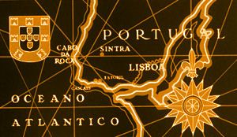

Sintra

| Castelo dos Mouros |
| Palàcio Nacional da Pena |
| Palàcio e Quinta da Regaleira |
With its imposing, lush green serra - the Mountain of the Moon - dotted with palaces, crystal-clear springs, churches and manors, snaking its way down to the ocean, and the areas in the old part of town or in Estefânia and the villages lending a splash of colour to the surrounding plain, Sintra is an exceptional place of extreme beauty and of undeniable cultural and natural interest. In 1995, this beautiful town's fame spread following its designation as a Unesco World Heritage Site in the Cultural Landscape category. This small, spread-out town, huddled against the mountainside, is the nose of Europe, around 30 km from Lisbon. Surrounded by Retiros, luxurious properties that used to serve as retreats, and Quintas, houses halfway between the farm and the small palace, are ideal shelters from the heat. Sintra was also the source of inspiration for a number of Romantic writers, such as Lord Byron and Paul Morand. |
|
Welcome! |
|
During a sightseeing trip to Portugal, I fell in love with Sintra and its castles.
Sintra, an exceptional, though oddly-assorted town, is a combination of Moorish, Gothic and
Renaissance styles, making it one of the hotspots for Romantic architecture.
|
